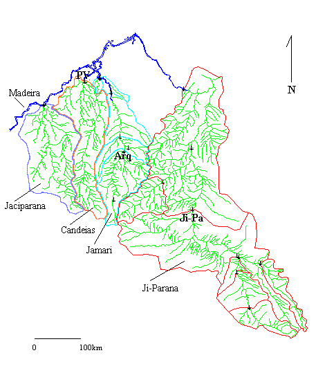

Project Synopsis
Purpose of the Study
The goal of the proposed research is to answer the question:
What is the
influence of land-cover change on the streamflow of Amazonian river basins with
areas of approximately 10,000 km2 ?
Since the effects of land–cover change at this ‘mesoscale’ interact
with the influence of the other major controlling variables, climate and basin
size, this question needs to be answered by accomplishing subsidiary tasks,
which are:
- to quantify the influence of both climate and land-cover change on river
flow in Amazonian basins with areas of approximately 10,000 km2;
- to define the range of basin size over which land use, with its own
characteristic nature and scale in Amazonia, affects the hydrology of
rivers; and
- to understand processes governing those influences.
The results will be expressed in the form of a mathematical model, checked
against the response of river flow in the State of Rondônia, Brazil, and driven
by measurements of rainfall, energy sources, and terrain characteristics,
derived initially from ground-based measurements and eventually from satellites.
The model will be applicable to mesoscale basins in other physiographic regions
of the Amazon Basin, in which our research group has some field experience. The
purpose of the model is to assist in interpreting and generalizing from field
data and in understanding the processes by which climate and land-cover, along
with terrain characteristics, affect hydrologic response at the river-basin
scale. That understanding will be formalized through systematic computational
experiments, and checked against river discharges gauged by the Brazilian
hydrometric agency ANEEL. The empirical part of the study will define current
and recent effects of climate fluctuation and land use on river flow. The
intended level of understanding and modeling of river flows and basin hydrology
will facilitate sustainable management of water and land resources in heavily
exploited regions.
Methodology
The rare opportunity exists in the state of Rondônia for a model-based
comparison of land-use effects on the hydrology of river basins varying from a
few hundred to 60,000 km2. Four subparallel, mesoscale basins: the
Jaci-paraná, Candeias, Jamari, and Ji-Paraná, run north to join the R. Madeira,
one of the major tributaries of the Amazon (Figure 1). These basins have been
gauged by the Brazilian hydrometric agency, ANEEL, for periods ranging up to
about 20 years. Their regional geology, soils, rainfall climates, and primary
vegetation covers (floresta aberta) are similar, but because the pattern
of land-use in the region is driven by the alignment of a major road, BR-364,
the approximate proportions of the basins that have been deforested at some time
between 1974 and 1996 are: essentially zero for the Jaci-paraná; <5% in the
Candeias; 51% for the Jamari, and 47% for the Ji-Paraná. Gauged tributary basins
within the Jamari and Ji-Paraná basins (Figure 1) represent a broader range of
deforestation, ranging up to 70%. The shaded zone in Figure 1 indicates the zone
of widespread deforestation that has occurred at some time before 1996.
It is not possible in such a large area and dynamic land-use situation to
perform a hydrologic experiment of the kind conducted in studies of land-use
effects in "paired watersheds". Important results on the microscale
response of forest and pasture in Rondônia will result from such a microscale
basin study and associated hydrometeorological observations to be conducted by a
Brazilian, British, and Dutch contingent in LBA. We have communicated closely
with this group throughout our planning, and hope to use results from their
towers and other sites to refine our energy and water balance computations.
However, that study does not speak to the mesoscale question concerning
river-basin response, outlined above.
In the absence of a controlled hydrologic experiment, we intend to define the
mesoscale land-use signal through a formal, model-based comparison of the
hydrologic response of basins with differing extents and histories of land-cover
change during the period of river gauging. We will base our modeling on field
measurements by ourselves and others to represent explicitly the effects of land
cover and other variables (mainly soil, topography, and channel network form) on
the physical processes of the hydrologic cycle (evaporation, infiltration,
soil-moisture storage, groundwater storage, subsurface flow, streamflow, and
floodplain inundation). At the mesoscale, these processes must be integrated to
a coarse-grained resolution, and this will be the task on which we will
concentrate. We will do this by characterizing relatively homogeneous Hydrologic
Response Units (HRUs) of approximately 10-100 km2 each using (1)
previously mapped and satellite-based information on terrain characteristics,
interpreted on the basis of our sample field transects of topography, depth to
bedrock and water tables, and subsurface hydrologic properties; (2) isotopic and
chemical tracing of runoff from HRUs; and (3) numerical modeling, and routing of
the predicted runoff to stream gauges currently maintained by ANEEL.
After comparing the results of the (un-calibrated) model with rainfall and
streamflow data from the gauges shown in Figure 1, we will conduct a set of
computational experiments to analyze systematically the influence of climate and
land use on the hydrologic functioning of mesoscale basins under a range of
conditions that is widespread in the heavily exploited portion of the Amazon Basin. Our emphasis will be on creating a general, process-based understanding
of the land-use signal on both the quickflow that generates floods and
transports bioactive materials into streams, and the delayed flow that sustains
water supplies and aquatic ecosystems, and reflects regional patterns of
evaporation, primary production, soil moisture, and groundwater recharge. Both
our systematic field surveys of variability and pattern in terrain
characteristics and our modeling will also facilitate the interpretation of
macroscale, coarser-grained approaches to observing and modeling the entire
Amazon Basin.

Figure 1: Map of
the four mesoscale rivers to be used in the study. Different colors indicate the
four major gauged river basins and the tributary basins nested within them.
Black symbols indicate the river gauges operated by ANEEL. The
approximate drainage areas gauged are: Jaci-paraná 13,500 km2 (light-blue
outline); Candeias 12,700 km2 (orange outline); and Jamari 14,800 km2
(dark-blue outline). Four gauged basins of approximately 1,000 km2
lie within and around the Jamari basin. In the Ji-Paraná (red outline), gauged
basins ranging in area from 3,000 km2 to 15,600 km2 have
been heavily affected by deforestation at some time during the past 25 years.
That river is also gauged at drainage areas of 31,000 km2 and 62,000
km2 downstream of the disturbed area, presenting an opportunity to
study the damping of the land-use signal by the hydrologic response of the
ambient undisturbed forested lowland and a major river corridor. The diagonal
axis of the mapped area is approximately 500 km long.
October 1, 1998